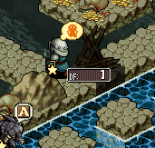
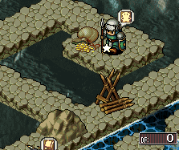
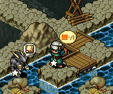
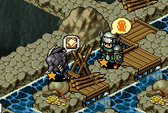
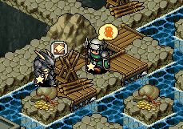
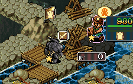
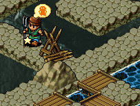

| 概要 | 情報 | ステージ攻略 |
| 地図 | テクニック | モナモナ攻略へ |
|  ゲーム開始直後にこの位置にDF1の柵を作るように指示を出します。  柵を作ったら、この位置にあるお金を回収します。  お金を回収したら、上の画像のように橋をかけます。そして、次に怪獣のいる小島に橋を架けます。  橋を架けたら、その上にDF1の柵を作ります。すぐに作らないとユニットがやられるので注意してください。  次に赤の国とつながるように橋を架けます。  赤のユニットが襲ってきたら、怪獣の小島に通じる柵を壊し、自国のユニットを後退させます。そして、このように柵を作り怪獣を赤のユニットを襲うように仕向けます。  怪獣と赤のユニットが戦っている間に、一番始めに作った柵を壊し、上の画像のように柵を作ります。 すると、もう一匹の怪獣が赤のユニットに襲いかかります。 |
| 概要 | 情報 | ステージ攻略 |
| 地図 | テクニック | モナモナ攻略へ |